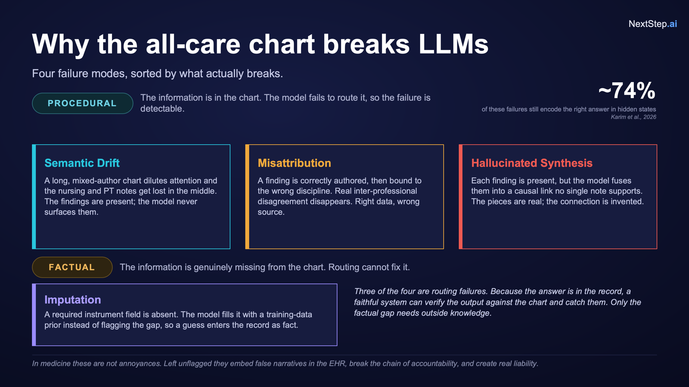
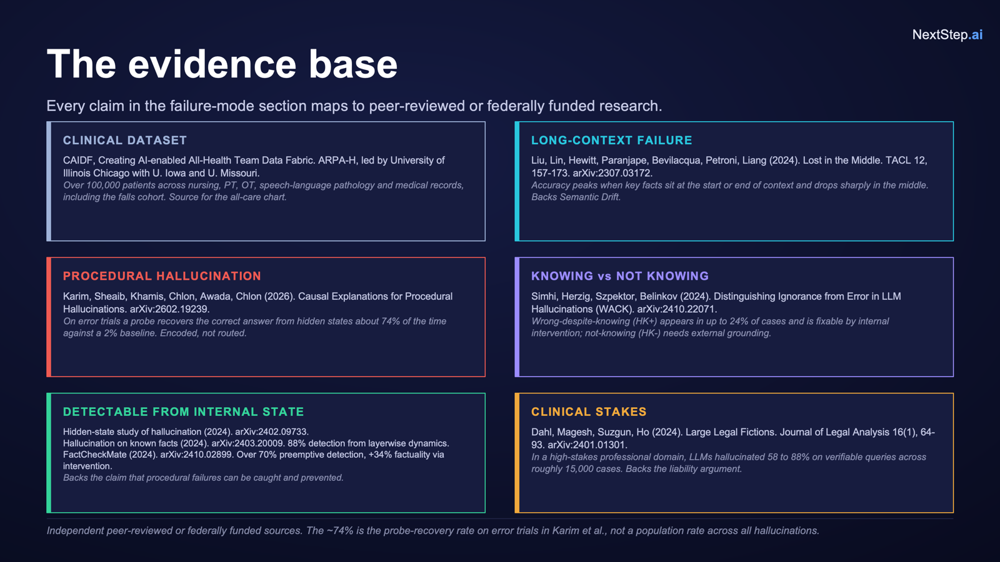

PROCEED
Evidence complete → grounded answer from the record only.
EvidenceFirst · CAIDF Hackathon · May 30, 2026
Advanced summarization for care teams — turning data into insight, not speculation.
Gated · Grounded · Auditable · Human-in-the-Loop
Problem
Clinicians struggle to find, synthesize, and act on quality patient data gaps essential for safe multidisciplinary care — especially after a fall.
Most clinical AI is rewarded for answering. We reward it for knowing when not to.

Solution · Innovation
Decide whether to answer, gather more information, or abstain — then reason only when justified.
Evidence complete → grounded answer from the record only.
Evidence missing → name the gap and route (patient, PT, clinician).
Out of scope → explain why; hand back to a clinician.
Human-in-the-loop is the mechanism — the gate escalates at the right moment.
Verdict distribution · 200-patient UIC Falls set (demo)
Illustrative mix from deck slide 10 · computable on full cohort run.
Feasibility · Validated instruments
“What's the fall risk?” is not answered directly. The system anchors to Morse, Hendrich II, or Timed Up and Go — then checks the real record.
Stop the dangerous cross-disciplinary synthesis step so hallucination never happens.
Validated instruments
Vague question
“What’s the fall risk?”
Anchor to instrument
Never free-form synthesis
Check record
Fields · author · 30-day window
Grounded verdict
Score or named gap
Illustrative flow · same logic as the live demo gate.
The gate
Concept embedding, answerability checks, and validated fall-risk instrument selection — before any grounded narrative.
Question received
FALL RISK SCOREConcept gate — in distribution
FALL ASSESSMENTInstrument picker — Morse Fall Scale
SURVEYMissing inputs — gait, mental status
✕ GATHERImpact
Safer care · Cleaner reports and claims · One source of truth.
No hallucinated assertions or scores at the bedside — only what the record supports.
Source-attributed, audit-ready summaries for reports and reimbursement workflows.
Maps where records are incomplete instead of papering over gaps with fluent prose.

Data + tools
Zero data egress · NIST 800-171 aligned environment
On-prem stack (deck slide 17)
Live demo
Browser-only · no API keys · chats saved locally · same PROCEED / GATHER / ABSTAIN logic as the deck
Fall index date
—
Fall-risk within 30d
—
Vitals within 30d
—
Suggested follow-ups
Quick actions